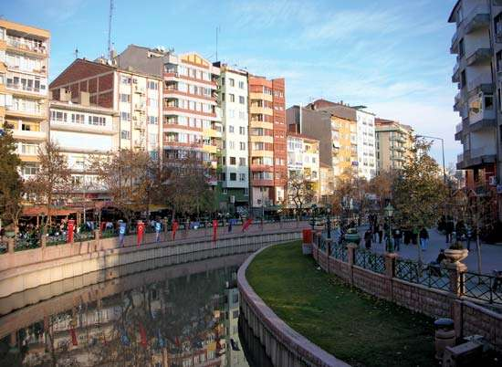

Eskişehir

Located near the site of the ancient Phrygian city of Dorylaeum, the present city probably began in Byzantine times as a cluster of settlements around hot springs. The scene of a Crusader victory over the Seljuq Turks in 1097, it came under Ottoman control near the end of the 13th century. The city expanded with the coming of the railway in the late 19th century and the immigration of Turks from the European provinces of the Ottoman Empire in the early 20th century. Despite its name (Turkish: “Old City”), most of the city was rebuilt after its destruction in the Turkish War of Independence (1919–22).